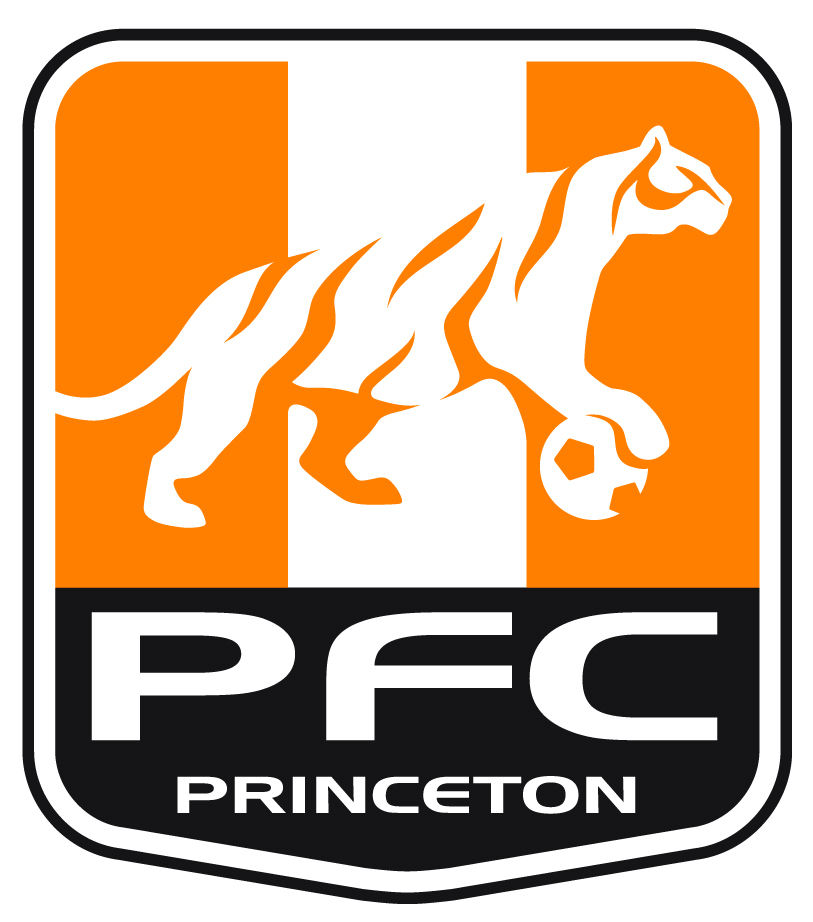

South Brunswick, Jersey Knights, School, and Princeton
My Teams I've Played For

I've played for many teams in my life but I played with South Brunswick the longest. When I was around 7 or 8 I tried out for the South Brunswick travel team and I made it on my first tryout. I tried out for Jersey Knights for the first time this year and I made it. I played with the Princeton squad and I was invited to most of the games because I did good while playing with them. And finally this year I made the freshmen soccer team for the high school.
page 1 / 2 / 3/4/5